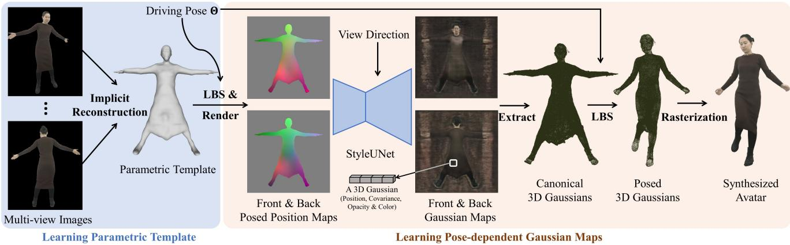

所以「Generalizable（可泛化）」在这里的意思很具体，一点都不玄：网络只在训练阶段见过大量不同的人，训练完之后，来一个从来没见过的人，不需要针对他重新优化，直接前向推理就能渲染出他的新视角。原文 Fig. 1 的图注用了三个词把这件事说得很干净——「without any fine-tuning or optimization」。
它的做法可以拆成四步（原文 Fig. 2）：
① 选两个相邻视角
给一个目标新视角，先挑出离它最近的两个源视角（原文：the adjacent two views）。注意是两个——这是「稀疏视角」设定，不是几十个相机围着拍。
原图注（Fig. 2）：Overview of GPS-Gaussian. Given RGB images of a human-centered scene with sparse camera views and a target novel viewpoint, we select the adjacent two views on which to formulate our Gaussian representation. We extract the image features followed by conducting an iterative depth estimation. For each source view, the depth map and the RGB image serve as a 3D position map and a color map, respectively, to formulate the Gaussian representation while the other parameters of 3D Gaussians are predicted in a pixel-wise manner. The Gaussian parameter maps defined on 2D image planes of both views are further unprojected to 3D space and aggregated for novel view rendering. The fully differentiable framework enables a joint training mechanism for all networks.
（中译：GPS-Gaussian 总览。给定以人为中心场景的稀疏相机视角 RGB 图像与一个目标新视角，我们选出相邻的两个视角来构造高斯表示。我们先提图像特征，再做迭代式深度估计。对每个源视角，深度图与 RGB 图分别充当 3D 位置图与颜色图，用来构造高斯表示，而 3D 高斯的其它参数以逐像素方式预测。两个视角上定义的、位于 2D 图像平面的高斯参数图，进一步被反投影到 3D 空间并聚合，用于新视角渲染。整个框架完全可微，这让所有网络可以联合训练。） 怎么看这张图：顺着图从左往右走一遍，就能看懂前面那四步。① 左边是两个相邻视角 + 一个目标视角；② 中间是深度估计模块——注意它给出了两张深度图；③ 中间偏右那一块是高斯参数图：深度当位置、RGB 当颜色，其余参数（旋转、缩放、不透明度）各有一张图；④ 最右边是反投影到 3D 并聚合、渲染到目标视角。 要记住的一句话：这张图里没有「优化」这个环节——从输入到输出全是网络前向。这正是它与本季前面所有高斯 SLAM 论文最大的结构差别。
最后一个设计是联合训练，原文 §4.3 讲了它的两个动机，很值得记：（a）如果两个源视角的深度估计器各自独立训练，两张深度图会对不齐，导致 3D 表示不一致——所以两个视角的深度要一起训；（b）经典的立体匹配深度估计本质是个 2D 任务（在两张图之间找像素对应），而可微渲染能提供三维层面的辅助信息，反过来又能提升深度的精度。这是一个互相帮忙的关系：更准的深度让高斯参数更准，可微渲染又让深度更准。
原图注（Fig. 1）：High-fidelity and real-time novel view synthesis (NVS). Our proposed method synthesizes 2K-resolution novel views of unseen human performers in real-time without any fine-tuning or optimization. The performance outperforms the state-of-the-art feedforward NVS methods ENeRF [19], FloRen [47] and 3D-GS [12], which are representative approaches in implicit neural human rendering, image-based human rendering and per-subject optimization, respectively. We only mark the running efficiency for feed-forward methods.
（中译：高保真、实时的信视角合成。我们的方法对没见过的人体表演者实时合成 2K 分辨率的新视角，不需要任何微调或优化。性能超过了当前最好的前馈式新视角合成方法 ENeRF、FloRen 与 3D-GS——它们分别代表隐式神经人体渲染、基于图像的人体渲染、以及逐主体优化三条路线。） 怎么看这张图：这张图的题眼是「unseen（没见过的）」这两个字。① 图里的人是网络训练时没见过的；② 结果是实时的、2K 分辨率；③ 更值得注意的是它拿来对比的三个对手，图注特意说明了它们各自代表一条路线——注意 3D-GS 在这里是以「逐主体优化」的代表身份出现的，也就是说这一篇把自己放在了「逐主体优化」的对立面。 要记住的一句话：「免优化」不是「优化得更快」，而是结构上就不做优化。
说完能做什么，再说不能做什么——这一篇的边界必须写清楚，原文自己也承认了：
三条边界（必须记住）
① 只在人体上验证过。它的训练数据全是人体扫描（THuman2.0、Twindom、自采真实人体数据），学到的是「人体长什么样」的先验。它对桌子、房间、街道没有任何证据。
② 它依赖深度估计。整个框架的几何全靠那个双目深度模块，深度不准，高斯的位置就不准。
③ 它明确说了「没见过的大姿态 / 遮挡下泛化未保证」。换句话说，「可泛化」是有范围的——泛化到「新的人」，不保证泛化到「新的动作幅度」。
以及最要紧的一条：它不是 SLAM。它只做新视角合成，不估计相机位姿、不做回环、不建长期地图。它属于「免优化新视角合成」这条分支。它给 SLAM 的价值在于方法可借鉴（比如「把参数放到 2D 图上再抬到 3D」这个技巧），而不是它本身能当 SLAM 用。
原图注（Fig. 3）：Qualitative comparison on THuman2.0 [69], Twindom [55] and our collected real-world data. Our method produces more detailed human appearances and can recover more reasonable geometry.
（中译：在 THuman2.0、Twindom 与自采真实数据上的定性对比。我们的方法产生更细致的人体外观，并能恢复更合理的几何。） 怎么看这张图：这张图的作用是让你确认「免优化」不等于「粗糙」。① 它横跨了三个数据源——两个公开数据集 + 自采真实数据，说明不是只在一个数据集上凑出来的；② 每一组都是和别的方法并排比的，请重点看衣服褶皱、头发边缘这类细节哪里更清楚；③ 顺带注意这批图的裁剪形状——都紧贴人体，这本身就是在提示你：这套方法的世界里几乎只有人体。 要记住的一句话：它赢在「细节 + 速度 + 免优化」三者同时成立；而这个「同时成立」的限制条件，就是场景必须是人。
4. Animatable Gaussians：让高斯跟着姿态动
第一篇解决的是「来一个没见过的人」；第二篇解决的是另一个问题：同一个人，摆出不同的姿势怎么办？
先说清楚它的目标：「Pose-dependent（姿态相关）」在这里的意思是——高斯的属性是跟着姿态变的。不是我优化出一套固定的高斯然后死板地渲染，而是我输入一个姿态，就预测出一套与之匹配的高斯。原文的标题写得很直接：Learning Pose-dependent Gaussian Maps for High-fidelity Human Avatar Modeling。
它的流程分两大步，看下面这张原图最清楚：

原图注（Fig. 2）：Illustration of the pipeline. It contains two main steps: 1) Reconstruct a character-specific template from multi-view images. 2) Predict pose-dependent Gaussian maps through the StyleUNet, and render the synthesized avatar by LBS and differentiable rasterization.
（中译：流程示意。它包含两个主要步骤：1）从多视角图像重建一个角色专属模板；2）通过 StyleUNet 预测姿态相关高斯图，并用 LBS 与可微光栅化渲染合成出来的数字人。） 怎么看这张图：这张图把两段分得很干净，请盯住中间那条分界。① 左半段是「建模板」——从多视角视频里重建一个属于这个人的参数化模板（这一步是每个角色都要做一次的）；② 右半段是「用模板」——给一个姿态，从模板出发预测出姿态相关的高斯图，再用 LBS 把高斯变形到当前姿态，最后可微光栅化渲染出来。 要记住的一句话：第二步（用模板）是快而可重复的，第一步（建模板）是慢而一次性的——这正是「免优化」与「仍要建模板」两种性质叠在同一篇论文里的样子。
「可泛化」在这里指的是：训练完之后，来一个网络从来没见过的（unseen）人，不需要针对他做任何微调或优化，一次前向推理就能渲染出他的新视角。原文摘要的措辞是「without any fine-tuning or optimization」，Fig. 1 的题眼就是「unseen human performers」。